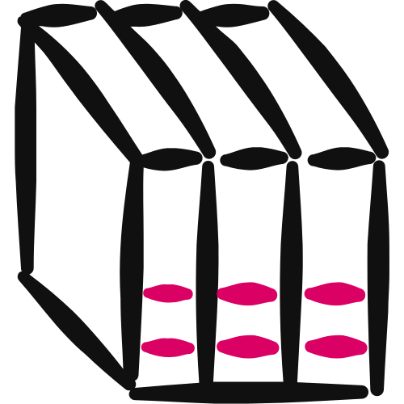

Client Flywheel™ · Step 7 · Goliath Content™ · Part 2 of 2
Your Program Modules
Nine one-page tools your members fill in, one for every step of your Magic Formula™. You write the content first, then turn it into finished pages in your brand.

You'll leave with nine Module Specs, one per step (each the page plus the lesson that goes with it), then nine finished pages in your Brand Kit, ready to print as PDFs.
- A module is a tool, not a lesson. One step, one page, one session, one thing they hold. 01
- Two steps, two tools. Write the nine specs first, then build the pages from them. 03
- Every spec has two parts. Part A is the page. Part B is the teach for your call or video. 04
- Six checks, all must pass. The Module Check runs on every spec before you see it. 07
- Build it in two chats. The prompt writes the specs, then the skill makes the pages. 10
01
Nine Things Your Members Hold
A Program Module is a one-page tool your members fill in and walk away holding, built for one step of your Magic Formula™.
Nine steps, nine modules. That's the backbone of your program.
You already know the shape. Your Event Magnet™ is one step given away free: a one-page tool, incomplete on purpose, that ends on a paid next step.
A Program Module is the same kind of tool, built for every step, for people who've already paid. It teaches the step in full, produces the step's outcome and hands the member to the next module.
Figure 01 · The shape of a module. Every page fills in within 20 to 60 minutes.
Why it matters
Most programs don't fail because the coach can't teach. They fail because the member finishes a lesson with nothing in their hands.
Forty recordings in a members' area? Everyone starts, almost nobody finishes. Watching isn't doing.
And if your free Event Magnet™ is a sharp tool while your paid program is slides, the free thing looks better than the paid one.
What it is not
It's not a lesson summary. A page they read is a lesson. A page they fill in is a tool.
It's not your slide deck, and it's not an offer page. There's no price, no booking link and no second button on a module.
Your members didn't pay for more to read. They paid to walk out with the thing done.
02
Where It Fits
Your Program Modules are the second tool of Step 7, Goliath Content™, in the Client Flywheel™.
The Goliath Content™ Map plans what you publish. The Program Modules are what your members work through once they're in.
Figure 02 · The $100K Day Engine™. Three pillars, nine steps. Your modules are built inside Step 7.
The tools of Step 7
| Part | Tool | What it does |
|---|---|---|
| 1 | The Goliath Content™ Map | 210 working titles: the content that fills the room |
| 2 · Step 1 of 2 | Program Module Specs | The nine modules, written |
| 2 · Step 2 of 2 | Program Module Visual | The nine pages, built in your Brand Kit from the confirmed specs |
What feeds in
Your Magic Formula™ is required. Your system name, three phases, nine step names and outcomes are the spine of every module.
Your Enrollment Doc is strongly recommended. It holds how your program runs and the offer above it.
Your notes, transcripts, recordings or slides of you teaching each step are the best source for the lesson. Bring your SCORE™ Card, $Million Promise™, Golden Avatar™, any Event Magnet™ Spec and any member results too.
Your nine steps are your nine modules. Each module's name is the step's name, exactly as your Magic Formula™ writes it.
Change a step later and you rebuild that module. Lock the Formula first, then write the modules on top of it.
03
Two Steps, Two Tools
Your modules are built in two steps, on purpose. You finish the words before any artwork exists.
| Step | The tool | What you get |
|---|---|---|
| 1 of 2 | The Program Module Specs Builder (a prompt) | Nine Module SpecsEverything that will be on one module's page, plus the lesson that goes with it for your call or video. One .md file per module., one module at a time, each confirmed by you |
| 2 of 2 | The Program Module Visual (a skill) | Nine finished pages in your brand, built from the confirmed specs, your BRAND KIT block and a headshot |
Why split it? Design choices made mid-sentence drag the words around to fit a picture that doesn't exist yet.
Step 1 runs in three stages
It reads every document you bring and shows all nine modules in one table. You reply with changes, or "go."
Two quick questions if it needs them, five promise lines to pick from, then the full spec. "Next," or "all."
A final check, a list of anything your documents didn't hold, and your nine specs.
The nine layouts, picked by the verb
On the Program Map, each module gets a page layout. What the member does at that step decides it.
| Layout | The member… | Typical steps |
|---|---|---|
| Worksheet | builds it | identity statements, offers, messages, plans |
| Matrix | places it on a 2 × 2 | choosing a niche, fit decisions |
| Calculator | counts it | pricing, client maths, activity targets |
| Checklist | ticks it | profile upgrades, onboarding, readiness |
| Script | says it | outreach messages, sales calls |
| Workflow | sequences it | pipelines, delivery plans, weekly rhythms |
| Cheat Sheet | references it | objection answers, follow-up lines |
| Scorecard | scores it | reviews, "where am I now" |
| Audit | scores and prices it | anything with a cost of inaction |
Each page also gets one of three structures, Classic, Sidebar or Split, rotating so no two pages in a row look alike. You don't pick these.
04
Anatomy of a Module Spec
Every spec has two parts. Part A is the page. Part B is the teach.
The headings are a contract. Step 2 reads them to build the artwork, so they're never renamed, reordered or dropped. An empty one says [none].
The PageA1–A10 · what the member fills in
| Block | What goes in it |
|---|---|
| A1 · Masthead | The step name as the title and your chosen promise as the subtitle, with the four you didn't pick kept for emails and posts |
| A2 · Instruction | How to use the page, in one or two lines |
| A3 · Panels | The work: each panel's label, one teaching line and its rows |
| A4 · Result panel | The one thing the page converges to |
| A5 · Where this fits | The three phases and nine steps, with "you are here" and the next module named |
| A6 · Closing bar | Your belief line, the commitment lines and one plain Next button |
| A7 · Lockup | Program name · your name · business |
| A8 · Layout | The structure, the hero panel for your call, and where the emphasis sits |
| A9 · One-session win | "In about X minutes, the member fills in the page and holds the deliverable." |
| A10 · Module Check | Six checks, each with one line on why it passes |
The trap: a page of paragraphs with a few lines at the bottom. One teaching line per panel, and the rest is rows to fill.
The TeachB1–B8 · the lesson for your call or video
| Block | What goes in it |
|---|---|
| B1 · Where they get stuck | Three scenes from this step, in your members' words |
| B2 · The opening | The first line of the lesson, and one line of your story only if it fits |
| B3 · Three teaching sections | The how, in full: the trap, the teaching point, an image of it working |
| B4 · Done when | Three or four tick items you can see are done |
| B5 · Belief + proof | The "I can't because…" and the truth that breaks it, with a real member result |
| B6 · The one action | One thing done now, the hand-off to the next module, then one bridge line to your next-level offer |
| B6b · Use it to sell | An email or post angle that sells the idea behind this step |
| B7 · Common mistakes | Three, which feed the traps in B3 |
| B8 · For the call | A one-minute live exercise, a chat prompt, what to bring next time |
The trap: struggles pitched too high. "They struggle with time management" is true of every step. B1 needs three scenes true of this one.
05
Five Options, You Pick One
Every module gets its own promise. It's your $Million Promise™, scaled down to what this one step delivers.
It's the subtitle on the page and the line that sells the module before anyone fills it in. Always a result, never an instruction.
The Builder writes five, each leading with something different, and marks the strongest ★. You pick one by letter, edit one, or take the ★.
| Option | Leads with |
|---|---|
| A | The result the step produces |
| B | The first win they'll feel fast |
| C | The obstacle it removes |
| D | The dream outcome they walk away with |
| E | Who they become |
The four you don't pick aren't wasted. They stay in the spec as ready-made email, ad and post hooks.
The "without" comes from your own documents: the fear your members actually name in your SCORE™ Card, Golden Avatar™ or $Million Promise™.
No two modules share a promise. And a module never promises money the step can't produce on its own.
06
The Teach, No Pitch
Part B is a lesson. It runs the five acts of your SCORE™ Framework in order, in education mode.
| Act | The member thinks… | Where it lives |
|---|---|---|
| Serendipity | "This lesson is about my problem, right now" | B1, and the first line of B2 |
| Connection | "This person has been where I'm stuck" | B2, one line of your story |
| Opportunity | "So that's how it's done" | B3, the how in full |
| Reality | "I can do this, and here's what it costs not to" | B5, with real proof |
| Execution | "The next step is obvious" | B6 the one action · B4 done when |
The test for every line: could another coach in your space have written it? If yes, it needs your scene, your words or your numbers.
The bridge lineOne line after the member's one action that names your next-level offer, exactly as your documents name it. The only sell in the lesson. is the only sell, and it comes after the action. No price, scarcity or offer anywhere inside the lesson.
Done when: a finish line you can see
Every module ends with three or four tick items. They're how a member, or you on a call, knows the step is finished.
"Feel clearer about my outreach."
"5 conversations held this week."
Done when is also where the real-world actions live. The page takes 20 to 60 minutes, and the work in the world gets ticked off when it's done.
07
The Module Check
The specs aren't scored out of 25. Instead, six checks run on every spec, and all six pass or the spec isn't delivered.
| Check | Passes when | Fails when |
|---|---|---|
| On-Step | Built from this one step, titled with its exact name | Drifts into other steps, or the name is changed |
| Visual | A page you can fill in, show on a call and hold up | A block of text |
| A Tool, Not a Teach | They fill it in and hold a finished thing | Notes, a lesson summary, a reading page |
| One Session | Fills in within 20–60 minutes; real-world actions sit in Done when | A week of work on the page itself |
| Complete for the Step | Produces the step's outcome from your Magic Formula™ | Leaves the step half done, or stops at a teaser |
| Hands Off | Names the next module, with one plain Next button | An offer, price or booking on the page |
Check 5 is what separates a module from an Event Magnet™. The magnet stops on purpose. The module finishes the step.
08
Before and After
Here's one module, from a vague idea to a spec. The coach and system are made up: Step 2 of a "Calm CEO Method," called "The Sunday Reset."
"Module 2 is a video on weekly planning, plus a PDF of tips."
Where they get stuck: "They struggle with time management."
- Layout: Workflow, because they sequence their week
- Panels: Start here · Clear, Choose, Block · the timeline
- Result: "My Week, Set," one page with Monday's first task written down
- Stuck: "The Sunday list that's dead by Tuesday"
- Proof: [MISSING CONTENT — a member result for this step]
"Plan your whole week in 30 minutes on a Sunday, without a list that's longer by Tuesday." ★
Figure 08 · Same step, now a tool. An illustrative example: a made-up coach and system, with no real client implied.
Notice what the Builder didn't do: rename the step, add a price, or invent a member quote. The missing proof is flagged until the coach has one.
09
The Hard Rules
The Builder holds you to every one of these.
- The module's name is the step's name. Exactly as your Magic Formula™ writes it. Never renamed or shortened.
- Your documents are the truth. What they don't hold is flagged [MISSING CONTENT — …], never invented.
- Teach on the page, sell around it. No offer, price, booking link or second button on a module.
- A tool, not a lesson. The teaching lives in Part B. The page carries one teaching line per panel.
- One output. Every module converges to the step's one deliverable, never a list of homework.
- Each module hands off to the next. What Module 2 produces is Module 3's starting point. Module 9 hands off to your members' ongoing rhythm.
- The headings are a contract. Step 2 reads them, so they never change.
- Your numbers, not Matthew's. Matthew White's $24.6M and $5.2M are his credentials. They never go in your modules.
10
Build Your Modules
Now you build them, in two chats. Write and confirm all nine specs first, then make the pages.
The Program Module Specs Builder
It reads your documents, maps all nine modules, then writes each Module Spec with you, one module at a time. It asks one question at a time and waits for your answer.
Paste the whole prompt as it is. The length is instructions for the AI, not work for you.
- Copy the prompt. Use the button above, or download the file.
- Open a new chat. In Claude, start it inside your $100K Day AI Workspace project so it can read your documents. ChatGPT works too.
- Paste it and send. The Builder explains how it works and asks what to call you. Check: it asks one question, then waits.
- Answer one question at a time. Bring your documents and check what it found. Approve the Program Map, then for each module pick a promise and read Part A, then Part B. Say "next," or "all."
- Check the final list. Every spec passed the Module Check. Check: nine specs, plus a list of any [MISSING CONTENT] to fill later.
- Save them. In your AI Workspace they go in Client Engine › Client Flywheel › program-modules, as
module-01-….mdtomodule-09-….md.
The Program Module Visual
It reads your confirmed specs, your BRAND KIT block and a headshot, then builds the nine finished pages in your brand, one at a time. You install it in Claude once.
Upload the .zip as it is. Don't unzip it: the page templates and Brand Kits inside are what the build uses.
- Download the skill. Use the button above to save
cl-program-module-visual.zip. - Install it once. In Claude, open Settings › Capabilities › Skills (or Customize › Skills in the app), choose Upload skill and upload the .zip. Check: it shows as enabled.
- Open a new chat and upload three things. Your Module Specs (all nine, or the ones you want), your BRAND KIT block with any OVERRIDES line, and a square-ish headshot.
- Say "Build my module pages." It confirms what it has, then builds Module 1 and shows it. Check: the step name and promise match your spec.
- Go one module at a time. Edit by hand or ask for changes, then say "next," or "all" for the rest. A wording change goes back into the spec first.
- Save them. Export each page as a PDF and save it beside its spec in Client Engine › Client Flywheel › program-modules.
No design canvas on your Claude account? You get the same pages as HTML files that open in any browser and print to PDF.
11
Check Your Work
Almost every program that doesn't get finished fails in one of these ways. Check yours against each one.
Nine modules on step names you're still changing.
The module's name is the step's name, and it doesn't change on its own.
The member leaves inspired and stuck.
The whole system lives in A5, as a map with "you are here."
A price or a "book your call" button mid-task.
The next-level offer lives in the bridge line and the B6b email angle.
A member quote you don't have, or a rate you never measured.
Supply it later, replace the flag, bump the version.
Every content change now has to be made twice.
Then step 2 builds from them, and changes always go back into the spec.
Is it ready?
- Nine specs, in order, each titled with the step's exact name.
- Every spec has A1–A10 and B1–B8, with nothing renamed, reordered or dropped.
- Every page fills in within 20 to 60 minutes and converges to one deliverable.
- Done when is three or four tick items you could check without asking.
- Nothing is for sale on any page, and every module names the next one.
- Every promise is yours, built on your own documents, and every gap is flagged, never guessed.
- Nine specs and their finished pages are saved in your program-modules folder.
12
Your Action Items
Tick these off as you go. Your ticks stay in this browser, and when they're all done the contents marks this chapter complete.
Resources for this chapter
That's the last chapter. Head back to the Guidebook home to see where you are across the whole Engine.
Nine steps, nine pages, nine things they can hold, each one finishing the step before it and setting up the next. Write the content first, confirm it, then make it look like you.
Coach Launch
Apply For Partnership Opportunity
Last updated 2026-11-12